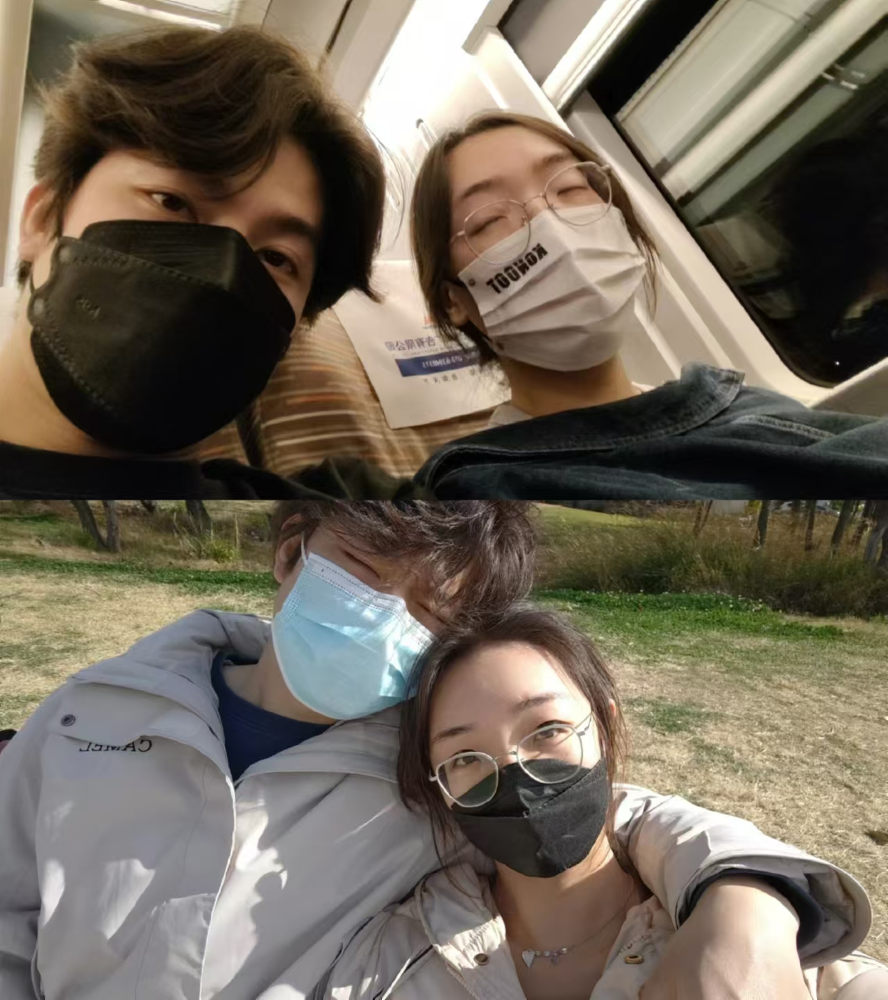
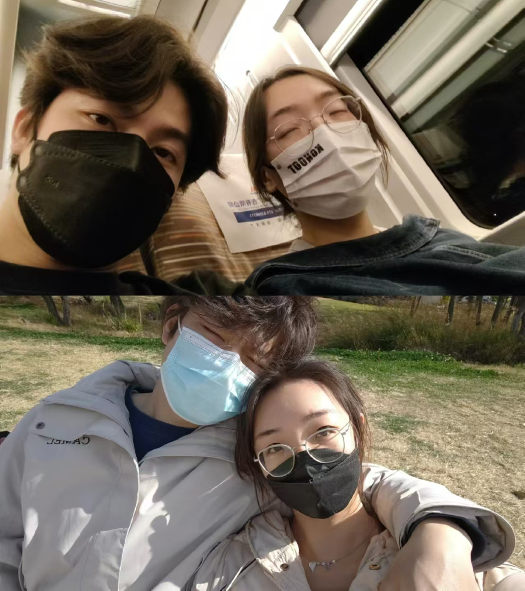

About Me
My name is Jun YIN. Currently, I am a PhD Student in the Department of Data Science and Artificial Intelligence at The Hong Kong Polytechnic University under the supervision of Professor Chengqi ZHANG and Professor Shirui PAN.
I received my Master degree in Electronic Information and Bachelor degree in Computer Science from Central South University in 2025 and 2022, respectively. From September 2021 to June 2025, I studied in BigData 4 Urban Intelligence Lab lead by Professor Senzhang WANG. From October 2023 to February 2025, I worked as Onsite Research Intern at Microsoft AI supervised by Professor Chaozhuo LI, focusing on LLM-based generative recommendation.
My main research interests lie in:
- Generative Recommender Systems, Large Language Models
- Relational Deep Learning, Tabular Machine Learning
- Graph Neural Networks, GNN Explanation Methods, Interpretable GNNs
üìñ Education
The Hong Kong Polytechnic University, Hong Kong SAR, China.
Central South University, Changsha, Hunan Province, China.
Central South University, Changsha, Hunan Province, China.
üìù Publication


Other Publications
-
KDD 2025
When Graph meets Multimodal: Benchmarking and Meditating on Multimodal Attributed Graphs Learning.
Hao Yan, Chaozhuo Li, Jun Yin, Zhigang Yu, Weihao Han, Mingzheng Li, Zhengxin Zeng, Hao Sun, Senzhang Wang. [CCF-A] -
TKDD 2025
Have Our Cake and Eat It: Augmentation Diversity and Semantic Consistency Balanced Graph Contrastive Learning.
Hao Yan, Senzhang Wang, Chaozhuo Li, Jun Yin, Philp S. Yu, Jianxin Wang. [CCF-B] -
WSDM 2025
MoKGNN: Boosting Graph Neural Networks via Mixture of Generic and Task-Specific Language Models.
Hao Yan, Chaozhuo Li, Jun Yin, Weihao Han, Hao Sun, Senzhang Wang. [CCF-B] -
NeurIPS 2023
A Comprehensive Study on Text-Attributed Graphs: Benchmarking and Rethinking.
Hao Yan, Chaozhuo Li, Ruosong Long, Chao Yan, Jianan Zhao, Wenwen Zhuang, Jun Yin, Peiyan Zhang, Weihao Han, Hao Sun, Weiwei Deng, Qi Zhang, Lichao Sun, Xing Xie, Senzhang Wang. [CCF-A] -
ECML/PKDD 2023
Hierarchical Graph Contrastive Learning.
Hao Yan, Senzhang Wang, Jun Yin, Chaozhuo Li, Junxing Zhu, Jianxin Wang. [CCF-B] -
SDM 2023
Adversarial Hard Negative Generation for Complementary Graph Contrastive Learning.
Senzhang Wang, Hao Yan, Jinlong Du, Jun Yin, Junxing Zhu, Chaozhuo Li, Jianxin Wang. [CCF-B]
üíª Experience
⚖️ Services
üéñ Honor and Award
- 2025.03. Excellent Master's Graduate of General Higher Education Institutions in Hunan Province
- 2025.02. Outstanding Master's Graduate of Central South University
- 2024.10. National Scholarship of Central South University
- 2024.10. Outstanding Student of Central South University
- 2024.10. First Academic Scholarship of Central South University
- 2024.10. Goodix Scholarship of Central South University
- 2021.08. Third Prize in Hunan Province Aritificial Interlligence Challenge
☁️ After Research


 
